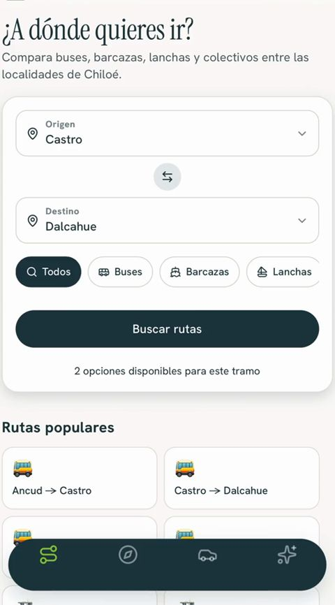
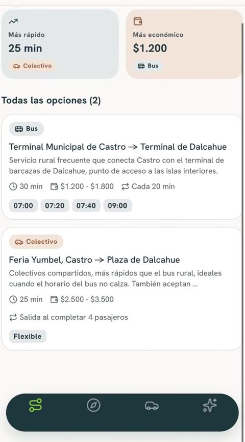
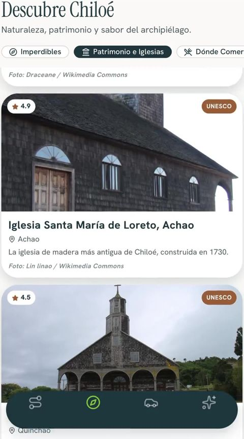
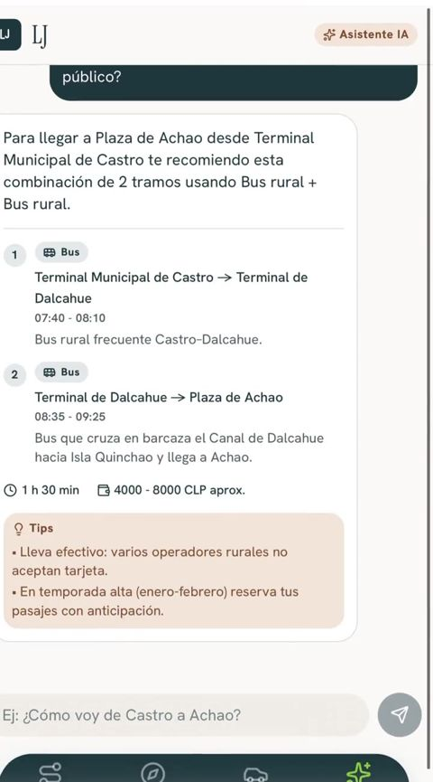

Transporte y turismo digital · Chiloé
LJ reúne horarios, recorridos, pasajes, viajes con conductores locales y la guía de la isla en el celular. Partimos en Chiloé y vamos por las zonas extremas de Chile, donde las grandes apps de viaje no llegan.

El problema
Los horarios de micros, colectivos, buses rurales y barcazas se preguntan en el terminal o se transmiten de persona a persona.
Las grandes plataformas de transporte no operan o tienen muy poca oferta en la isla, y ninguna integra buses ni barcazas.
Pasajeros que pierden tiempo buscando sencillo y choferes con descuadres de caja, falta de vuelto e incluso billetes falsos.
Quien visita Chiloé no tiene un solo lugar donde saber qué ver, dónde comer y cómo llegar.
La solución
Buses, micros, colectivos y barcazas en un solo buscador, con las conexiones entre ellos.
Compara precios entre buses y compra tu pasaje desde la app.
Pide un viaje dentro de la ciudad con conductores locales verificados.
Qué visitar, dónde alojarte y dónde comer, con recomendaciones de negocios locales.
Arma tu itinerario combinando buses y barcazas y responde tus dudas del viaje.
Choferes y empresas publican horarios, reciben pagos sin efectivo y llegan a más pasajeros.
El pago es híbrido: digital o en efectivo. En nuestras encuestas, el 61% de los usuarios ve el efectivo como un problema, pero no todos, así que mantenemos las dos opciones.
La app
Pantallas del prototipo, con rutas y lugares de la isla.
Busca entre buses, barcazas, lanchas y colectivos.

La más rápida, la más económica y todos los horarios.

Patrimonio, naturaleza y sabores del archipiélago.

¿Cómo voy de Castro a Achao? Te arma la ruta paso a paso.
Validación
Entrevistas y encuestas a residentes, turistas, choferes, operadores de transporte y restaurantes.
Fuente: Customer Discovery de LJ en MOVEIncuba 2026, agosto y septiembre de 2026 (23 entrevistas en terreno en Quellón y 19 encuestas por formulario).
Para quién
Compara precios y compra tu pasaje desde el teléfono, llueva o no.
Qué visitar, dónde alojarte, dónde comer y cómo llegar, todo en un solo lugar.
Viajes mejor organizados y un canal digital para vender pasajes y viajes.
Aparecer en la guía de la app y ofrecer beneficios a los usuarios de LJ.
Modelo de negocio
El pasajero no paga por usar la app. Los montos de comisión y suscripción se validarán en el piloto.
Un porcentaje de cada venta hecha en la app, cobrado al operador o chofer.
Plan mensual con descuentos en pasajes y en comercios asociados.
Restaurantes y comercios pagan por aparecer destacados en la guía.
Hoja de ruta
Validación con 42 personas y demo grabado en Chiloé.
App en App Store y Google Play y piloto en Quellón y Castro.
Otros territorios de Chile donde no llegan las apps de viaje.
Regiones aisladas de todo el continente.
Quién está detrás
“Viajaba día por medio más de tres horas en bus. Ahí descubrí la necesidad.”
Súmate
Para terminar la app, ejecutar el piloto y lanzarla en las tiendas.
Especialistas en desarrollo de apps y pagos, en Chile o en España.
Operadores de transporte, restaurantes, municipios e instituciones de Chiloé.